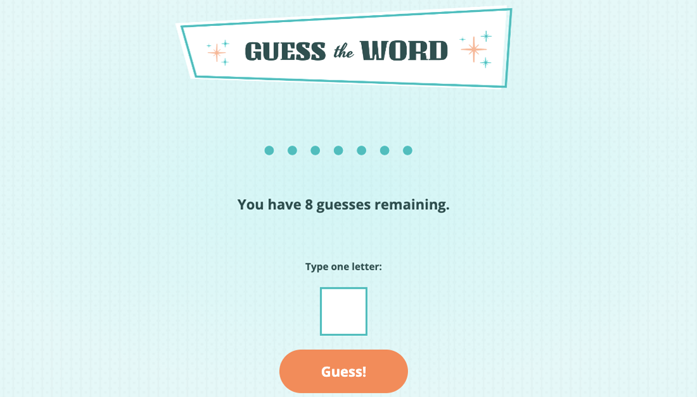
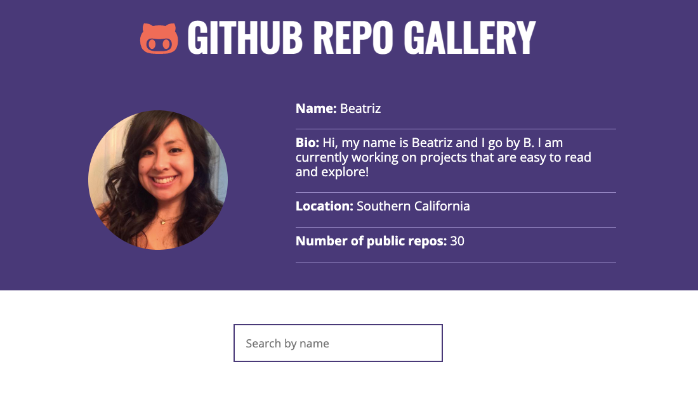
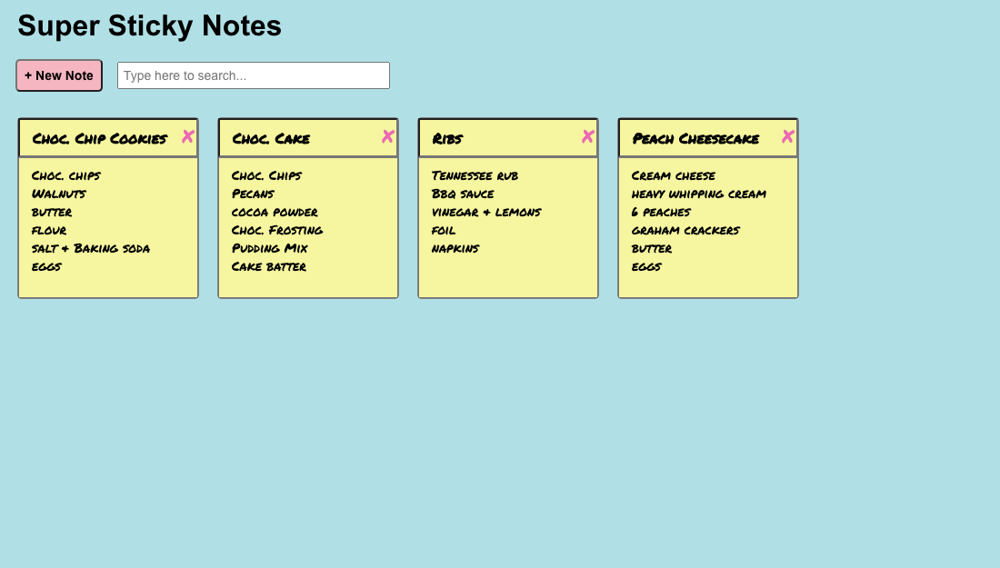
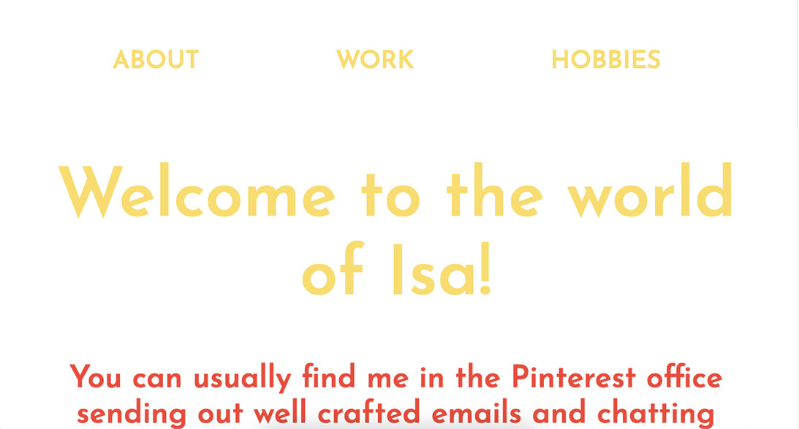
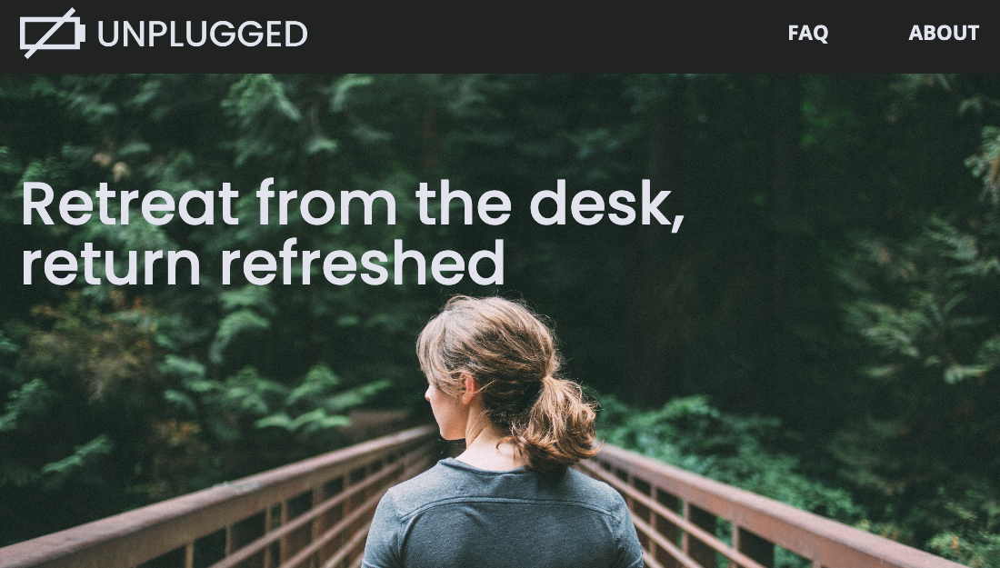

Todo Sobre Beatriz
Hola, yo soy Beatriz. Desarrolladora Frontend, cocinera, y panadera... y fastidiosa según mis hermanas.
Me puedes encontrar en la cocina o en la computadora. Buscando recetas o codificaciones
complicadas, me paso los días haciendo lo que me gusta.
Usando los lenguajes basicos de HTML y CSS, puedo transformar ideas a paginas.
Agregando JavaScript o React, puedo modificar tu pagina a la website de tus sueños.
Vivimos en un tiempo donde dependemos de nuestros telefonos/computadoras más y más, por eso mi
meta es crear paginas que son accessibles a todos, faciles de entender e usar, y ✨bonitas✨.
En la cocina, me encanta cocinar unas enchiladas verdes, o unas costillas con bbq.
Pero si prefieres algo dulce, el pastel de chocolate me queda riquisimo! Entra mas complicada
la receta, más gusto me da hacerla.
Proyectos
Guess The Word Game
Un juego donde adivinas la palabra, letra por letra. Si no adivinas la palabra despues de 8 turnos, piereds el juego.
Pagina en Vivo
JavaScript | CSS3 | HTML5 |
Manipulando el DOM
GitHub
Gallery

Visita mi pagina de GitHub! Usando la interfaz de programación de aplicaciones, puedes ver mis repositorios.
Pagina en VivoAPIs | JavaScript | Manipulando el DOM
Sticky
Notes

Aplicacion React donde puedes hacer, guardar y salvar notas.
Pagina en VivoManipulando el DOM | JavaScript | ES6| Managing the Data Flow | React
Isaura's
Website

Pagina hecha para mi hermana, Isaura. Queria una pagina que demuestra carerra y su vida personal.
Pagina en VivoHTML5 | CSS3 | Media Queries | JavaScript
Unplugged Retreat
Pagina de diseño web adaptable ideal para negocios que quieren asegurar que su producto se vea bien en en cualquier pantalla, no importe la dimension.
Pagina en VivoCSS3 | HTML5 | Media Queries | Responsive Typography